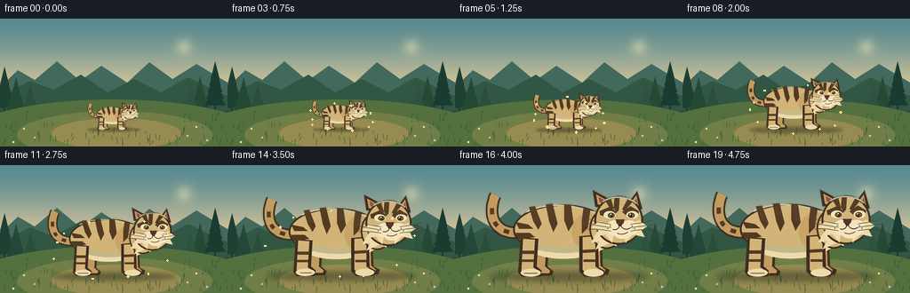
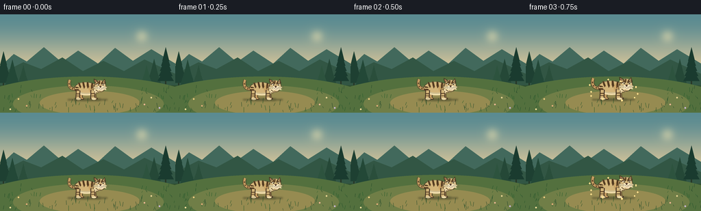

CODING AGENTS AS PIXEL WORLD MODELS
traex/GPT-5.6-Sol · instance_preservation_0053
点击播放 · 原生 RGB 像素
逐轮保存的候选
回放视频、检查图与代码变化。
每份候选均可单独播放。实际图片检查记录在下方工具轨迹中。
候选 01播放与检查图
点击播放 · 原生 RGB 像素


展开代码变化
--- 上一保存版本
+++ 本次保存版本
@@ -0,0 +1,262 @@
+from pathlib import Path
+import math
+import numpy as np
+from PIL import Image, ImageDraw, ImageFilter
+import artifact_io
+
+ROOT = Path(__file__).resolve().parent
+W, H, N = 256, 144, 20
+SS = 4
+
+
+def pts_curve(p0, p1, p2, p3, steps=30):
+ out = []
+ for i in range(steps + 1):
+ t = i / steps
+ q = 1 - t
+ out.append((q**3*p0[0] + 3*q*q*t*p1[0] + 3*q*t*t*p2[0] + t**3*p3[0],
+ q**3*p0[1] + 3*q*q*t*p1[1] + 3*q*t*t*p2[1] + t**3*p3[1]))
+ return out
+
+
+def make_background():
+ """A calm, static dawn clearing: readable silhouette and no camera motion."""
+ w, h = W*SS, H*SS
+ arr = np.zeros((h, w, 3), dtype=np.uint8)
+ top = np.array([91, 139, 145], float)
+ mid = np.array([231, 205, 155], float)
+ bottom = np.array([75, 101, 62], float)
+ for y in range(h):
+ yy = y/(h-1)
+ if yy < .70:
+ u = yy/.70
+ u = u*u*(3-2*u)
+ c = top*(1-u) + mid*u
+ else:
+ u = (yy-.70)/.30
+ c = mid*(1-u) + bottom*u
+ arr[y, :, :] = np.clip(c, 0, 255)
+ im = Image.fromarray(arr, 'RGB')
+ d = ImageDraw.Draw(im, 'RGBA')
+ S = SS
+
+ # Soft sun, deliberately off-center so it never reads as part of the tiger.
+ glow = Image.new('RGBA', im.size, (0,0,0,0))
+ gd = ImageDraw.Draw(glow, 'RGBA')
+ sx, sy = 207*S, 32*S
+ for r in range(28*S, 3*S, -2*S):
+ a = int(2 + 20*(1-r/(28*S))**2)
+ gd.ellipse((sx-r,sy-r,sx+r,sy+r), fill=(255,235,178,a))
+ gd.ellipse((sx-7*S,sy-7*S,sx+7*S,sy+7*S), fill=(255,236,180,155))
+ im = Image.alpha_composite(im.convert('RGBA'), glow.filter(ImageFilter.GaussianBlur(5*S)))
+ d = ImageDraw.Draw(im, 'RGBA')
+
+ # Layered distant hills.
+ def poly(points, fill):
+ d.polygon([(x*S,y*S) for x,y in points], fill=fill)
+ poly([(0,77),(20,58),(39,69),(64,48),(90,70),(114,53),(143,72),(168,49),(194,68),(221,51),(256,72),(256,112),(0,112)], (66,105,92,105))
+ poly([(0,87),(34,70),(60,80),(91,63),(121,83),(151,68),(181,83),(211,66),(256,87),(256,116),(0,116)], (50,86,68,155))
+
+ # Distant pines frame, but leave a clean center clearing.
+ for x, bh, col in [(5,46,(30,64,50,150)),(18,34,(35,72,55,135)),(34,26,(42,78,59,110)),
+ (225,35,(37,72,55,125)),(242,52,(26,59,47,165)),(214,26,(45,83,62,100))]:
+ base = 105
+ d.rectangle((int((x-.9)*S),int((base-bh)*S),int((x+.9)*S),int((base+4)*S)), fill=(38,55,39,100))
+ for j in range(5):
+ yy = base-bh + 7+j*bh/7
+ half = (5+j*1.7)
+ d.polygon([(x*S,(yy-12)*S),((x-half)*S,(yy+8)*S),((x+half)*S,(yy+8)*S)], fill=col)
+
+ # Meadow bands and a warm central clearing.
+ d.rectangle((0,104*S,w,h), fill=(48,79,48,230))
+ d.ellipse((-42*S,91*S,296*S,177*S), fill=(83,112,62,255))
+ d.ellipse((19*S,104*S,239*S,158*S), fill=(112,126,71,195))
+ d.ellipse((58*S,112*S,204*S,147*S), fill=(150,139,81,88))
+
+ # Fine static grasses/flowers, deterministic.
+ rng = np.random.default_rng(5301)
+ for _ in range(125):
+ x = float(rng.uniform(0,256)); y = float(rng.uniform(107,144))
+ if 59 < x < 205 and y < 129: # clear silhouette area
+ continue
+ hh = float(rng.uniform(2,8)); sl = float(rng.uniform(-2.2,2.2))
+ color = (37,69+int(rng.integers(0,25)),43,130)
+ d.line((x*S,y*S,(x+sl)*S,(y-hh)*S), fill=color, width=max(1,S//2))
+ for x,y,c in [(27,124,(239,206,130,210)),(39,134,(230,174,123,210)),(221,122,(237,215,151,220)),
+ (233,137,(206,187,225,190)),(15,139,(242,223,156,210)),(211,132,(238,184,150,200))]:
+ d.ellipse(((x-1.2)*S,(y-1.2)*S,(x+1.2)*S,(y+1.2)*S),fill=c)
+
+ return im.convert('RGB').resize((W, H), Image.Resampling.LANCZOS)
+
+
+def make_tiger_sprite():
+ """One canonical beige tiger used in every frame; scaling preserves identity exactly."""
+ tw, th = 230, 126
+ s = 4
+ im = Image.new('RGBA', (tw*s, th*s), (0,0,0,0))
+ d = ImageDraw.Draw(im, 'RGBA')
+ def E(b, fill, outline=None, width=1):
+ bb=tuple(int(v*s) for v in b); d.ellipse(bb,fill=fill,outline=outline,width=max(1,int(width*s)))
+ def P(p, fill): d.polygon([(int(x*s),int(y*s)) for x,y in p],fill=fill)
+ def L(p, fill, width, joint='curve'):
+ d.line([(int(x*s),int(y*s)) for x,y in p],fill=fill,width=max(1,int(width*s)),joint=joint)
+ def C(p0,p1,p2,p3,fill,width): L(pts_curve(p0,p1,p2,p3,40),fill,width)
+
+ outline=(61,45,31,255)
+ dark=(65,45,28,255)
+ stripe=(83,57,32,245)
+ beige=(210,180,121,255)
+ beige2=(194,155,96,255)
+ light=(238,218,170,255)
+ cream=(244,229,191,255)
+ pink=(140,84,72,255)
+
+ # Tail behind the animal: outlined curve, tapered tip and four clear rings.
+ tail_curve=pts_curve((64,66),(31,75),(15,52),(27,23),42)
+ L(tail_curve, outline, 15)
+ L(tail_curve, beige2, 11)
+ # dark tail tip and rings at sampled segments
+ L(tail_curve[:7], dark, 10)
+ for a,b in [(10,14),(20,24),(30,34)]: L(tail_curve[a:b+1], stripe, 5)
+
+ # Far legs.
+ P([(73,73),(91,74),(89,108),(96,114),(94,119),(75,119),(72,114)], outline)
+ P([(76,74),(88,75),(86,108),(92,113),(91,116),(78,116),(76,111)], beige2)
+ P([(137,72),(153,72),(155,108),(163,112),(161,118),(143,118),(140,111)], outline)
+ P([(140,73),(151,73),(152,107),(158,112),(157,115),(146,115),(143,109)], beige2)
+
+ # Main torso outline and body.
+ E((48,34,165,94), beige, outline, 2.4)
+ # shoulder warmth and belly light patch
+ E((118,42,166,91), (202,164,103,255))
+ C((62,82),(88,98),(129,98),(155,82),light,10)
+ C((62,80),(91,92),(130,93),(156,78),(230,210,166,190),6)
+ # subtle back highlight
+ C((64,43),(90,30),(128,34),(153,48),(235,211,163,145),2.2)
+
+ # Near legs, strongly planted.
+ P([(57,73),(78,75),(76,108),(82,113),(81,120),(58,120),(54,115)], outline)
+ P([(60,75),(74,76),(72,109),(78,113),(77,116),(61,116),(58,113)], beige)
+ E((57,111,81,120), light)
+ L([(61,116),(77,116)],(92,66,39,150),1)
+ P([(127,72),(149,70),(150,109),(157,113),(156,120),(133,120),(127,114)], outline)
+ P([(131,73),(146,72),(146,108),(153,113),(152,116),(135,116),(131,112)], beige)
+ E((132,111,156,120), light)
+
+ # Body stripes: tapered, slightly curved, all attached to this single sprite.
+ P([(67,37),(74,36),(82,57),(78,64),(72,54)], stripe)
+ P([(87,34),(95,33),(101,57),(96,67),(91,54)], stripe)
+ P([(109,34),(117,35),(120,56),(114,66),(109,53)], stripe)
+ P([(132,38),(140,41),(137,62),(130,69),(130,53)], stripe)
+ # side/haunch stripes
+ P([(51,55),(66,58),(72,63),(55,63)],stripe)
+ P([(51,68),(68,68),(74,73),(54,76)],stripe)
+ P([(151,56),(162,58),(159,65),(145,67)],stripe)
+ P([(153,72),(162,72),(158,80),(146,82)],stripe)
+ # leg rings
+ L([(59,91),(74,91)],stripe,4); L([(58,101),(73,101)],stripe,3)
+ L([(131,90),(147,89)],stripe,4); L([(132,101),(147,101)],stripe,3)
+
+ # Neck/ruff bridges torso and head.
+ E((139,39,180,87), beige, outline, 2)
+ P([(147,69),(141,80),(151,78),(146,88),(163,80),(171,84),(174,69)],light)
+
+ # Ears behind head: dark outlines, beige shells and pink inner ears.
+ P([(146,37),(143,17),(160,26),(164,38)],outline)
+ P([(149,34),(147,22),(158,28),(160,37)],beige2)
+ P([(151,31),(150,25),(157,29),(158,34)],pink)
+ P([(184,34),(196,18),(202,39),(195,44)],outline)
+ P([(187,34),(195,23),(198,38),(194,41)],beige2)
+ P([(191,33),(195,27),(197,37),(194,38)],pink)
+
+ # Frontal three-quarter face.
+ E((145,24,203,82), beige, outline, 2.4)
+ # cheek ruffs
+ P([(150,54),(141,62),(150,65),(144,73),(158,70),(166,80),(170,61)],light)
+ P([(198,53),(208,60),(201,65),(205,73),(191,70),(182,80),(179,61)],light)
+ # brow shadows and white eye masks
+ P([(151,42),(165,36),(171,44),(163,49),(152,47)],stripe)
+ P([(178,43),(188,36),(198,42),(196,48),(185,49)],stripe)
+ E((156,42,170,51),cream); E((183,42,197,51),cream)
+ # green-gold eyes, black pupils and glints
+ E((161,44,169,50),(118,121,61,255),dark,1)
+ E((185,44,193,50),(118,121,61,255),dark,1)
+ E((164,44.5,167,50),dark); E((187,44.5,190,50),dark)
+ E((164,45,165.5,46.5),(255,249,218,255)); E((187,45,188.5,46.5),(255,249,218,255))
+ # forehead stripes
+ P([(169,25),(175,25),(174,41),(171,44),(168,38)],stripe)
+ P([(157,28),(164,25),(168,39),(165,41)],stripe)
+ P([(185,27),(191,30),(181,42),(178,40)],stripe)
+ # muzzle pads and nose
+ E((159,53,179,71),cream); E((176,53,197,71),cream)
+ P([(170,52),(181,52),(177,60),(174,60)],dark)
+ E((171,52,180,58),(84,55,45,255))
+ # mouth/chin
+ C((175,58),(175,64),(170,65),(167,64),dark,1.2)
+ C((176,58),(178,64),(184,65),(188,62),dark,1.2)
+ E((169,65,187,75),cream)
+ C((172,68),(177,71),(182,69),(185,67),(122,71,58,255),1.2)
+ # whiskers
+ for dy,endy in [(-3,-6),(1,0),(5,7)]:
+ C((165,61+dy),(153,59+dy),(146,58+dy),(137,57+endy),(75,67,51,210),.8)
+ C((188,61+dy),(199,59+dy),(207,59+dy),(216,58+endy),(75,67,51,210),.8)
+ # small face dots
+ for x,y in [(164,60),(161,63),(190,60),(193,63)]: E((x-.7,y-.7,x+.7,y+.7),dark)
+
+ # A restrained highlight along the head to improve volume.
+ C((155,31),(166,23),(185,24),(195,33),(245,222,172,120),1.8)
+ return im
+
+
+def smoothstep(x):
+ x=max(0.0,min(1.0,x)); return x*x*(3-2*x)
+
+
+def render():
+ bg = make_background()
+ tiger = make_tiger_sprite()
+ frames=[]
+ for i in range(N):
+ t=i/(N-1)
+ # Brief small and large holds, with one continuous, unambiguous growth action.
+ u=smoothstep((t-0.055)/0.84)
+ scale=.30 + .65*u
+ frame=bg.convert('RGBA')
+ fd=ImageDraw.Draw(frame,'RGBA')
+
+ # Ground contact shadow expands with the exact same scale.
+ cx, ground=128,125
+ shadow_w=94*scale; shadow_h=10*scale
+ shadow=Image.new('RGBA',(W,H),(0,0,0,0)); sd=ImageDraw.Draw(shadow,'RGBA')
+ sd.ellipse((cx-shadow_w,ground-shadow_h*.45,cx+shadow_w,ground+shadow_h*.55),fill=(28,38,25,105))
+ shadow=shadow.filter(ImageFilter.GaussianBlur(max(1.2,3.2*scale)))
+ frame=Image.alpha_composite(frame,shadow)
+
+ # Resize the single canonical animal, preserving every marking and facial detail.
+ sw=max(1,round(tiger.width/4*scale)); sh=max(1,round(tiger.height/4*scale))
+ sprite=tiger.resize((sw,sh),Image.Resampling.LANCZOS)
+ x=round(cx-sw/2); y=round(ground-sh*(120/126))
+ frame.alpha_composite(sprite,(x,y))
+
+ # Sparse warm motes reinforce transformation without obscuring the subject.
+ fd=ImageDraw.Draw(frame,'RGBA')
+ strength=math.sin(math.pi*u)**1.5
+ if strength>.02:
+ for k in range(10):
+ ang=k*2.399 + t*1.7
+ rr=(32+55*u) + 4*math.sin(k*1.7+t*5)
+ mx=cx+math.cos(ang)*rr
+ my=(ground-41*scale)+math.sin(ang)*rr*.48
+ rad=0.65+0.55*(.5+.5*math.sin(k*2.1+t*7))
+ a=int(125*strength)
+ fd.ellipse((mx-rad,my-rad,mx+rad,my+rad),fill=(255,224,143,a))
+
+ frames.append(np.asarray(frame.convert('RGB'),dtype=np.uint8))
+ return np.stack(frames,axis=0)
+
+
+if __name__ == '__main__':
+ frames=render()
+ assert frames.shape==(N,H,W,3) and frames.dtype==np.uint8
+ artifact_io.save(frames,ROOT)
+ print(f'Saved {len(frames)} RGB frames at {W}x{H}.')
可观测工具轨迹
实际执行的命令与返回图片。
命令 1exit 0
/bin/bash -lc "cat prompt.txt && printf '\\n--- GENERATION_RULES.md ---\\n' && cat GENERATION_RULES.md"
命令 2exit 0
/bin/bash -lc "cat task_spec.json && printf '\\n--- FILES ---\\n' && find . -maxdepth 2 -type f -printf '%p %s bytes\\n' | sort"
命令 3exit 0
/bin/bash -lc "which ffmpeg || true; which python3 || true; python3 - <<'PY' mods=['PIL','numpy','cv2','imageio','cairo'] for m in mods: try: x=__import__(m); print(m,'OK',getattr(x,'__version__','')) except Exception as e: print(m,'NO',e) PY"
命令 4exit 0
/bin/bash -lc "sed -n '1,260p' artifact_io.py"
命令 5exit 2
/bin/bash -lc "cat > generate.py <<'PY'
from pathlib import Path
import math
import numpy as np
from PIL import Image, ImageDraw, ImageFilter
import artifact_io
ROOT = Path(__file__).resolve().parent
W, H, N = 256, 144, 20
SS = 4
def pts_curve(p0, p1, p2, p3, steps=30):
out = []
for i in range(steps + 1):
t = i / steps
q = 1 - t
out.append((q**3*p0[0] + 3*q*q*t*p1[0] + 3*q*t*t*p2[0] + t**3*p3[0],
q**3*p0[1] + 3*q*q*t*p1[1] + 3*q*t*t*p2[1] + t**3*p3[1]))
return out
def make_background():
\"\"\"A calm, static dawn clearing: readable silhouette and no camera motion.\"\"\"
w, h = W*SS, H*SS
arr = np.zeros((h, w, 3), dtype=np.uint8)
top = np.array([91, 139, 145], float)
mid = np.array([231, 205, 155], float)
bottom = np.array([75, 101, 62], float)
for y in range(h):
yy = y/(h-1)
if yy < .70:
u = yy/.70
u = u*u*(3-2*u)
c = top*(1-u) + mid*u
else:
u = (yy-.70)/.30
c = mid*(1-u) + bottom*u
arr[y, :, :] = np.clip(c, 0, 255)
im = Image.fromarray(arr, 'RGB')
d = ImageDraw.Draw(im, 'RGBA')
S = SS
# Soft sun, deliberately off-center so it never reads as part of the tiger.
glow = Image.new('RGBA', im.size, (0,0,0,0))
gd = ImageDraw.Draw(glow, 'RGBA')
sx, sy = 207*S, 32*S
for r in range(28*S, 3*S, -2*S):
a = int(2 + 20*(1-r/(28*S))**2)
gd.ellipse((sx-r,sy-r,sx+r,sy+r), fill=(255,235,178,a))
gd.ellipse((sx-7*S,sy-7*S,sx+7*S,sy+7*S), fill=(255,236,180,155))
im = Image.alpha_composite(im.convert('RGBA'), glow.filter(ImageFilter.GaussianBlur(5*S)))
d = ImageDraw.Draw(im, 'RGBA')
# Layered distant hills.
def poly(points, fill):
d.polygon([(x*S,y*S) for x,y in points], fill=fill)
poly([(0,77),(20,58),(39,69),(64,48),(90,70),(114,53),(143,72),(168,49),(194,68),(221,51),(256,72),(256,112),(0,112)], (66,105,92,105))
poly([(0,87),(34,70),(60,80),(91,63),(121,83),(151,68),(181,83),(211,66),(256,87),(256,116),(0,116)], (50,86,68,155))
# Distant pines frame, but leave a clean center clearing.
for x, bh, col in [(5,46,(30,64,50,150)),(18,34,(35,72,55,135)),(34,26,(42,78,59,110)),
(225,35,(37,72,55,125)),(242,52,(26,59,47,165)),(214,26,(45,83,62,100))]:
base = 105
d.rectangle((int((x-.9)*S),int((base-bh)*S),int((x+.9)*S),int((base+4)*S)), fill=(38,55,39,100))
for j in range(5):
yy = base-bh + 7+j*bh/7
half = (5+j*1.7)
d.polygon([(x*S,(yy-12)*S),((x-half)*S,(yy+8)*S),((x+half)*S,(yy+8)*S)], fill=col)
# Meadow bands and a warm central clearing.
d.rectangle((0,104*S,w,h), fill=(48,79,48,230))
d.ellipse((-42*S,91*S,296*S,177*S), fill=(83,112,62,255))
d.ellipse((19*S,104*S,239*S,158*S), fill=(112,126,71,195))
d.ellipse((58*S,112*S,204*S,147*S), fill=(150,139,81,88))
# Fine static grasses/flowers, deterministic.
rng = np.random.default_rng(5301)
for _ in range(125):
x = float(rng.uniform(0,256)); y = float(rng.uniform(107,144))
if 59 < x < 205 and y < 129: # clear silhouette area
continue
hh = float(rng.uniform(2,8)); sl = float(rng.uniform(-2.2,2.2))
color = (37,69+int(rng.integers(0,25)),43,130)
d.line((x*S,y*S,(x+sl)*S,(y-hh)*S), fill=color, width=max(1,S//2))
for x,y,c in [(27,124,(239,206,130,210)),(39,134,(230,174,123,210)),(221,122,(237,215,151,220)),
(233,137,(206,187,225,190)),(15,139,(242,223,156,210)),(211,132,(238,184,150,200))]:
d.ellipse(((x-1.2)*S,(y-1.2)*S,(x+1.2)*S,(y+1.2)*S),fill=c)
return im.convert('RGB')
def make_tiger_sprite():
\"\"\"One canonical beige tiger used in every frame; scaling preserves identity exactly.\"\"\"
tw, th = 230, 126
s = 4
im = Image.new('RGBA', (tw*s, th*s), (0,0,0,0))
d = ImageDraw.Draw(im, 'RGBA')
def E(b, fill, outline=None, width=1):
bb=tuple(int(v*s) for v in b); d.ellipse(bb,fill=fill,outline=outline,width=max(1,int(width*s)))
def P(p, fill): d.polygon([(int(x*s),int(y*s)) for x,y in p],fill=fill)
def L(p, fill, width, joint='curve'):
d.line([(int(x*s),int(y*s)) for x,y in p],fill=fill,width=max(1,int(width*s)),joint=joint)
def C(p0,p1,p2,p3,fill,width): L(pts_curve(p0,p1,p2,p3,40),fill,width)
outline=(61,45,31,255)
dark=(65,45,28,255)
stripe=(83,57,32,245)
beige=(210,180,121,255)
beige2=(194,155,96,255)
light=(238,218,170,255)
cream=(244,229,191,255)
pink=(140,84,72,255)
# Tail behind the animal: outlined curve, tapered tip and four clear rings.
tail_curve=pts_curve((64,66),(31,75),(15,52),(27,23),42)
L(tail_curve, outline, 15)
L(tail_curve, beige2, 11)
# dark tail tip and rings at sampled segments
L(tail_curve[:7], dark, 10)
for a,b in [(10,14),(20,24),(30,34)]: L(tail_curve[a:b+1], stripe, 5)
# Far legs.
P([(73,73),(91,74),(89,108),(96,114),(94,119),(75,119),(72,114)], outline)
P([(76,74),(88,75),(86,108),(92,113),(91,116),(78,116),(76,111)], beige2)
P([(137,72),(153,72),(155,108),(163,112),(161,118),(143,118),(140,111)], outline)
P([(140,73),(151,73),(152,107),(158,112),(157,115),(146,115),(143,109)], beige2)
# Main torso outline and body.
E((48,34,165,94), beige, outline, 2.4)
# shoulder warmth and belly light patch
E((118,42,166,91), (202,164,103,255))
C((62,82),(88,98),(129,98),(155,82),light,10)
C((62,80),(91,92),(130,93),(156,78),(230,210,166,190),6)
# subtle back highlight
C((64,43),(90,30),(128,34),(153,48),(235,211,163,145),2.2)
# Near legs, strongly planted.
P([(57,73),(78,75),(76,108),(82,113),(81,120),(58,120),(54,115)], outline)
P([(60,75),(74,76),(72,109),(78,113),(77,116),(61,116),(58,113)], beige)
E((57,111,81,120), light)
L([(61,116),(77,116)],(92,66,39,150),1)
P([(127,72),(149,70),(150,109),(157,113),(156,120),(133,120),(127,114)], outline)
P([(131,73),(146,72),(146,108),(153,113),(152,116),(135,116),(131,112)], beige)
E((132,111,156,120), light)
# Body stripes: tapered, slightly curved, all attached to this single sprite.
P([(67,37),(74,36),(82,57),(78,64),(72,54)], stripe)
P([(87,34),(95,33),(101,57),(96,67),(91,54)], stripe)
P([(109,34),(117,35),(120,56),(114,66),(109,53)], stripe)
P([(132,38),(140,41),(137,62),(130,69),(130,53)], stripe)
# side/haunch stripes
P([(51,55),(66,58),(72,63),(55,63)],stripe)
P([(51,68),(68,68),(74,73),(54,76)],stripe)
P([(151,56),(162,58),(159,65),(145,67)],stripe)
P([(153,72),(162,72),(158,80),(146,82)],stripe)
# leg rings
L([(59,91),(74,91)],stripe,4); L([(58,101),(73,101)],stripe,3)
L([(131,90),(147,89)],stripe,4); L([(132,101),(147,101)],stripe,3)
# Neck/ruff bridges torso and head.
E((139,39,180,87), beige, outline, 2)
P([(147,69),(141,80),(151,78),(146,88),(163,80),(171,84),(174,69)],light)
# Ears behind head: dark outlines, beige shells and pink inner ears.
P([(146,37),(143,17),(160,26),(164,38)],outline)
P([(149,34),(147,22),(158,28),(160,37)],beige2)
P([(151,31),(150,25),(157,29),(158,34)],pink)
P([(184,34),(196,18),(202,39),(195,44)],outline)
P([(187,34),(195,23),(198,38),(194,41)],beige2)
P([(191,33),(195,27),(197,37),(194,38)],pink)
# Frontal three-quarter face.
E((145,24,203,82), beige, outline, 2.4)
# cheek ruffs
P([(150,54),(141,62),(150,65),(144,73),(158,70),(166,80),(170,61)],light)
P([(198,53),(208,60),(201,65),(205,73),(191,70),(182,80),(179,61)],light)
# brow shadows and white eye masks
P([(151,42),(165,36),(171,44),(163,49),(152,47)],stripe)
P([(178,43),(188,36),(198,42),(196,48),(185,49)],stripe)
E((156,42,170,51),cream); E((183,42,197,51),cream)
# green-gold eyes, black pupils and glints
E((161,44,169,50),(118,121,61,255),dark,1)
E((185,44,193,50),(118,121,61,255),dark,1)
E((164,44.5,167,50),dark); E((187,44.5,190,50),dark)
E((164,45,165.5,46.5),(255,249,218,255)); E((187,45,188.5,46.5),(255,249,218,255))
# forehead stripes
P([(169,25),(175,25),(174,41),(171,44),(168,38)],stripe)
P([(157,28),(164,25),(168,39),(165,41)],stripe)
P([(185,27),(191,30),(181,42),(178,40)],stripe)
# muzzle pads and nose
E((159,53,179,71),cream); E((176,53,197,71),cream)
P([(170,52),(181,52),(177,60),(174,60)],dark)
E((171,52,180,58),(84,55,45,255))
# mouth/chin
C((175,58),(175,64),(170,65),(167,64),dark,1.2)
C((176,58),(178,64),(184,65),(188,62),dark,1.2)
E((169,65,187,75),cream)
C((172,68),(177,71),(182,69),(185,67),(122,71,58,255),1.2)
# whiskers
for dy,endy in [(-3,-6),(1,0),(5,7)]:
C((165,61+dy),(153,59+dy),(146,58+dy),(137,57+endy),(75,67,51,210),.8)
C((188,61+dy),(199,59+dy),(207,59+dy),(216,58+endy),(75,67,51,210),.8)
# small face dots
for x,y in [(164,60),(161,63),(190,60),(193,63)]: E((x-.7,y-.7,x+.7,y+.7),dark)
# A restrained highlight along the head to improve volume.
C((155,31),(166,23),(185,24),(195,33),(245,222,172,120),1.8)
return im
def smoothstep(x):
x=max(0.0,min(1.0,x)); return x*x*(3-2*x)
def render():
bg = make_background()
tiger = make_tiger_sprite()
frames=[]
for i in range(N):
t=i/(N-1)
# Brief small and large holds, with one continuous, unambiguous growth action.
u=smoothstep((t-0.055)/0.84)
scale=.30 + .65*u
frame=bg.convert('RGBA')
fd=ImageDraw.Draw(frame,'RGBA')
# Ground contact shadow expands with the exact same scale.
cx, ground=128,125
shadow_w=94*scale; shadow_h=10*scale
shadow=Image.new('RGBA',(W,H),(0,0,0,0)); sd=ImageDraw.Draw(shadow,'RGBA')
sd.ellipse((cx-shadow_w,ground-shadow_h*.45,cx+shadow_w,ground+shadow_h*.55),fill=(28,38,25,105))
shadow=shadow.filter(ImageFilter.GaussianBlur(max(1.2,3.2*scale)))
frame=Image.alpha_composite(frame,shadow)
# Resize the single canonical animal, preserving every marking and facial detail.
sw=max(1,round(tiger.width/4*scale)); sh=max(1,round(tiger.height/4*scale))
sprite=tiger.resize((sw,sh),Image.Resampling.LANCZOS)
x=round(cx-sw/2); y=round(ground-sh*(120/126))
frame.alpha_composite(sprite,(x,y))
# Sparse warm motes reinforce transformation without obscuring the subject.
fd=ImageDraw.Draw(frame,'RGBA')
strength=math.sin(math.pi*u)**1.5
if strength>.02:
for k in range(10):
ang=k*2.399 + t*1.7
rr=(32+55*u) + 4*math.sin(k*1.7+t*5)
mx=cx+math.cos(ang)*rr
my=(ground-41*scale)+math.sin(ang)*rr*.48
rad=0.65+0.55*(.5+.5*math.sin(k*2.1+t*7))
a=int(125*strength)
fd.ellipse((mx-rad,my-rad,mx+rad,my+rad),fill=(255,224,143,a))
frames.append(np.asarray(frame.convert('RGB'),dtype=np.uint8))
return np.stack(frames,axis=0)
if __name__ == '__main__':
frames=render()
assert frames.shape==(N,H,W,3) and frames.dtype==np.uint8
artifact_io.save(frames,ROOT)
print(f'Saved {len(frames)} RGB frames at {W}x{H}.')
PY
python3 generate.py
ls -lh pixels.npz inspection.png transition_check.png index.html frames/00.png frames/19.png"命令 6exit 0
/bin/bash -lc "python3 generate.py && python3 - <<'PY'
from pathlib import Path
import json, numpy as np
from PIL import Image
p=Path('.')
spec=json.loads(Path('task_spec.json').read_text())
z=np.load('pixels.npz')['pixels']
print('pixels tensor',z.shape,z.dtype,'expected',(spec['height'],spec['width'],spec['frames']))
ims=[np.asarray(Image.open(f'frames/{i:02d}.png').convert('RGB')) for i in range(20)]
a=np.stack(ims)
print('frames',a.shape,a.dtype,'range',a.min(),a.max())
print('mean abs frame deltas',np.round(np.abs(np.diff(a.astype(float),axis=0)).mean((1,2,3)),2).tolist())
print('artifacts',[(x.name,x.stat().st_size) for x in [Path('pixels.npz'),Path('inspection.png'),Path('transition_check.png'),Path('index.html')]])
PY"命令 7exit 0
/bin/bash -lc "python3 -m py_compile generate.py && python3 - <<'PY'
import numpy as np
from PIL import Image
import generate
bg=np.asarray(generate.make_background()).astype(int)
print('frame scale subject_bbox bottom')
for i in [0,2,5,8,11,14,17,19]:
a=np.asarray(Image.open(f'frames/{i:02d}.png')).astype(int)
diff=np.max(np.abs(a-bg),axis=2)>18
# center-region connected subject proxy, excluding subtle motes/shadow
ys,xs=np.where(diff)
# Include dominant subject pixels only; report overall meaningful-change extent.
if len(xs):
print(f'{i:>2} {(0.30+0.65*generate.smoothstep((i/19-.055)/.84)):.3f} ({xs.min():3},{ys.min():3})-({xs.max():3},{ys.max():3}) {ys.max():3}')
assert all(Image.open(f'frames/{i:02d}.png').mode=='RGB' for i in range(20))
assert len(list(__import__('pathlib').Path('frames').glob('*.png')))==20
print('Validation passed: 20 RGB PNG frames; runnable generator; fixed 256x144 canvas.')
PY
find . -maxdepth 2 -type f -printf '%p %s\\n' | sort | tail -n 30"保存候选 1 份；完成命令 7 次；可验证图片返回 0 张。原始 API 响应与完整日志保留在本地。